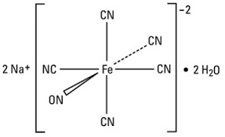
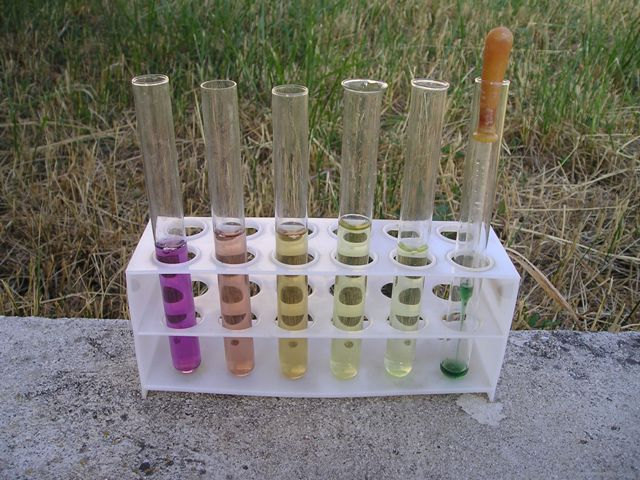

Un interessante metodo di analisi per via umida dei solfuri è quello che prevede l'uso del nitroprussiato sodico. Questo sale cianonitrosilico del ferro forma con lo ione solfuro un complesso di coordinazione rosso-violetto di grande potere colorante, grazie al quale la reazione si dimostra sensibilissima.
Per fare questo test occorre avere a disposizione il nitroprussiato, Na2[(NO)Fe(CN)5].2H2O e quindi andiamo subito a prepararlo, sfruttando le seguenti reazioni:
K4[Fe(CN)6] + 6 HNO3 = H2[(NO)Fe(CN)5] + 4 KNO3 + NH4NO3 + CO2
H2[(NO)Fe(CN)5] + Na2CO3 = Na2[(NO)Fe(CN)5] + H2O + CO2
Materiali occorrenti:
Ferrocianuro di potassio
Acido nitrico
Carbonato di sodio
Etanolo
Vetreria varia
In un beaker da 400 ml sciogliere 40 g di K4[Fe(CN)6]•3H2O in 60 ml di acqua tiepida. Aggiungere poi agitando 64 ml di HNO3 al 40%. Tenere la miscela in bagno di acqua tiepida finchè una goccia test della sol. bruna reagisce con una sol. di FeSO4 dando un precipitato verde scuro e non blù.
Lasciare a riposo una giornata e poi neutralizzare esattamente la miscela con Na2CO3, evitando l'eccesso. La soluzione neutralizzata si riscalda all'ebollizione, si filtra e rapidamente si concentra a piccolo volume. Si lascia raffreddare, e si aggiunge un egual volume di etanolo per precipitare la maggior parte del KNO3 formatosi.
Questo è filtrato e la soluzione rapidamente riconcentrata per evaporare l'etanolo. La soluzione rosso scura cristallizza in riposo; filtrare sotto vuoto e lavare rapidamente con acqua fredda.
Altro nitroprussiato si potrebbe ottenere per evaporazione dalle acqua madri. E' solubile 1 parte in 2,5 di acqua.

Il nitroprussiato è molto velenoso, ma trova utilità in medicina come terapia d'emergenza nell'ipertensione grave perchè riduce drasticamente e velocemente la pressione sanguigna.
Per l'analisi dei solfuri ho preparato per diluizioni successive quattro soluzioni, contenenti rispettivamente 100, 30, 10, 3 ppm di sodio solfuro in acqua.
Si noti che la diluizione è veramente molto spinta, 3 mg/l!
A quattro provette contenenti 10 ml ciascuna delle soluzioni di cui sopra, ho aggiunto in ognuna 3 gocce di NaOH al 20% per rendere l'ambiente nettamente alcalino e 8 gocce di una soluzione di sodio nitroprussiato all'1%. Una quinta provetta conteneva solo acqua per la prova in bianco.

Il risultato lo si può vedere in foto, anche se la stessa non rende esattamente l'idea perchè la colorazione è molto labile e tende a scomparire velocemente, soprattutto a queste diluizioni. Nella realtà l'apprezzamento del colore è molto più evidente.
La provetta con la pipetta contiene il nitroprussiato, ormai verde perchè la sostanza è molto fotosensibile: sono uscito dal lab con la soluz. marroncina (colore normale) ed è bastato un po' di sole diretto per renderla verdastra. Va preparata al momento dell'uso, nella quantità bastante.
Riassumendo: partendo da sinistra le provette contengono 100, 30, 10, 3, 0 ppm di Na2S.
Direi che (con il mio esperimento) 3 ppm è il limite di rilevazione dei solfuri con questo metodo, perchè il colore è ormai troppo pallido, anche se ancora percettibile al mio storico spettrofotometro (gli occhi!).